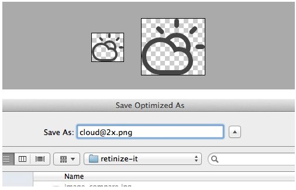

Embedded web fonts, Icon fonts and SVG: Vector-based RWD using CSS
CASCADE BOS Tuesday, April 22, 2014
By Daigo Fujiwara daigofuji
Welcome
Thanks! Kianosh, NGP VAN, Cascaders!

Little about me
- Nerd.
- Print designer since 1996.
- Web designer since 2001.
- Morphing into web developer ever since.
Experience with vectors
Remember Macromedia Freehand and Macromedia Flash? I do.

First off:
We Responsive Web Design
Many devices, one website.
But,
user-scalable=no or maximum-scale=1
do you use them anymore?
Problem
1. A Pixel is Not A Pixel:
Why does the 640px × 960px iPhone 4 claim to be 320px × 480px in the browser? The truth is that there are two different definitions of pixels: they can be the smallest unit a screen can support (a hardware pixel) or a pixel can be based on an optically consistent unit called a “reference pixel.”— A Pixel Identity Crisis by Scott Kellum, January 17, 2012 on A List Apart
Illustration of “reference pixel”
or what I like to call “CSS pixel”
2. Increasingly more different pixel-density display devices
I am not talking about just Apple “Retina” display
Examples include Google Chromebook Pixel
(and that was already over a year ago!):

- Samsung GalaxyS5 432 PPI
- Sony Xperia Z 441 PPI
- HTC One 468 PPI
(Those devices report as CSS Pixel Ratio of 3)
3. Remember @2x images?
Don’t get me started…
Apple's Developer GuideSolutions
(Well, some of many solutions)
Vector to the rescue

Method 1
web fonts
-
Pros:
- Pretty!
- Easy!
- Widely Supported!
-
Cons:
- File size/Performance
- License issues?
What is the browser support?
TL;DR: Pretty good.
Caveat
Support for Web Open Font Format (WOFF)
We do have to include multiple font formats, specifically
- EOT for IE 8,
- TTF for Chrome < 5, Firefox < 3.5, Opera < 10, Safari < 5 and
- SVG fonts for < iOS 5
@font-face syntax
@font-face {
font-family: 'MyWebFont';
src: url('webfont.eot'); /* IE9 Compat Modes */
src: url('webfont.eot?#iefix') format('embedded-opentype'), /* IE6-IE8 */
url('webfont.woff') format('woff'), /* Modern Browsers */
url('webfont.ttf') format('truetype'), /* Safari, Android, iOS */
url('webfont.svg#svgFontName') format('svg'); /* Legacy iOS */
}
— From Chris Coyer of css-tricks
Only supporting modern browsers?
@font-face {
font-family: 'MyWebFont';
src: url('webfont.woff') format('woff');
}Nice.
Web-based services for converting to web font formats:
Upload .otf or .ttf, get different formats.
Way to define font weight and font style in one font
@font-face {
font-family: 'myfont';
src: url('myfont-Regular-webfont.woff') format('woff');
font-weight: normal; font-style: normal;
}
@font-face {
font-family: 'myfont';
src: url('myfont-Italic-webfont.woff') format('woff');
font-weight: normal; font-style: italic;
}
@font-face {
font-family: 'myfont';
src: url('myfont-Bold-webfont.woff') format('woff');
font-weight: bold; font-style: normal;
}
@font-face {
font-family: 'myfont';
src: url('myfont-BoldItalic-webfont.woff') format('woff');
font-weight: bold; font-style: italic;
}Some font services and hosts
and a lot more...
Method 2
font icons

Image from github’s Octicons
-
Pros:
- Just fonts (The same @font-face)
- Use it at any size
- Use CSS effects
-
Cons:
- Monochrome (Can’t use more than one color)
- Performance? (Font Awesome woff is 44kb, but svg is 202kb)
Meet Font Awesome

It is pretty darn Awesome.
- MIT like licence, OK for commercial use (Open Font Licence)
- Flexible setup using SASS/LESS -- and everything is in variables
- Sizes, lists, stackable
- Use any css effects on them
Demo
http://cdpn.io/FoLay
Those are all in the docs
Other awesome icon fonts resources
- CSS-Tricks' Chris Coyer’s big list
- We love icon fonts
- icoMoon (more on this later)
Roll your own icon fonts
Glyphs

Can edit .otf format fonts
Workflow:
- Design icon in photoshop or illustrator (Working with Design Department)
- Position it in 2048x2048 document in illustrator
- Paste it into Glyphs
- Export as .otf
- use service like font squirrel to generate WOFF, EOT, TTF and SVG
Great post by github engineering team on how they created Octicon.
Proof of concept
I created a font called BB Club Font for a hackathon

Alternatively
Use apps like Fontello
or
Doc on how to import
SASS Mixin by Dale Sande
An excellent write up by Dale Sande, on how to organize.manage custom icon fonts.
He has written Sass icon fonts mixin, which is available via bower.
Link to his SassMeister Demo
Method 3
SVG
Scalable Vector Graphics
XML-based vector image format -- open standards, spec’ed by W3C
-
Pros:
- Open Standards
- Multi-Colors
- No Cross Origin issues
-
Cons:
- File size/Performance
- No IE8 (but otherwise very well supported.)
Support
For IE8, use polyfills like SVGWeb, or try simple fallbacks
Awesome Resources
SVG Sprite
Chris Coyer from css-tricks has written an awesome article on how to do this.
Basically, load the combined svg (he used grunt to combine multiple files into one) up front, then use
<svg viewBox="0 0 100 100" class="iconclass"><use xlink:href="#id"></use></svg> anywhere in the code. You can use class to change svg properties like fills, strokes etc.
SVG at a data URI for background images.
Questions?
Thoughts?
Open Discussion.
Thanks!
daigo@daigofujiwara.com
@DaigoFuji